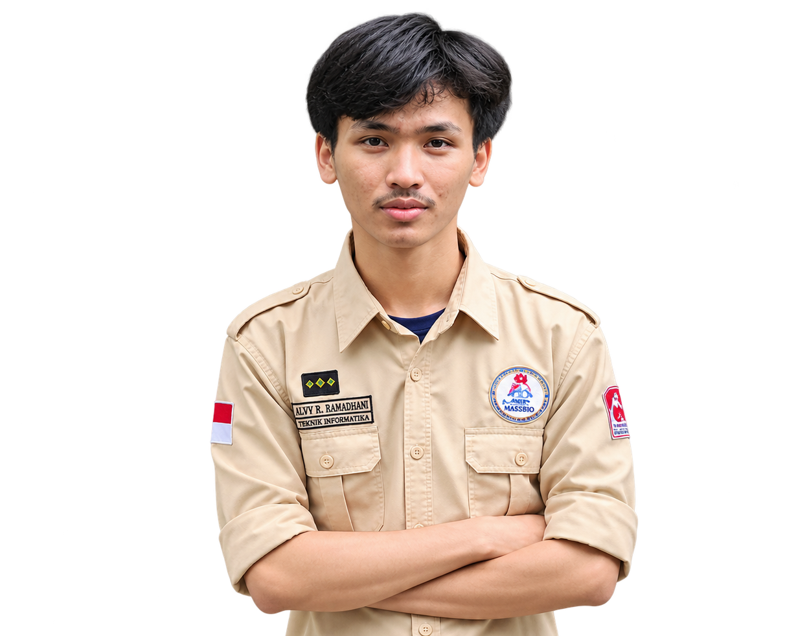
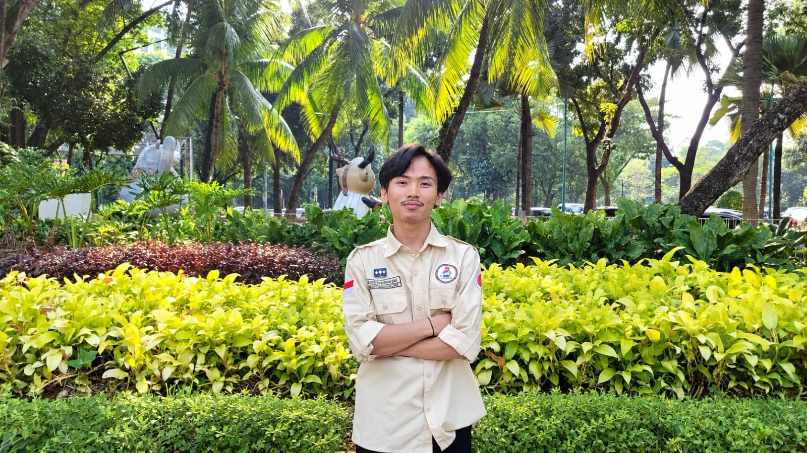
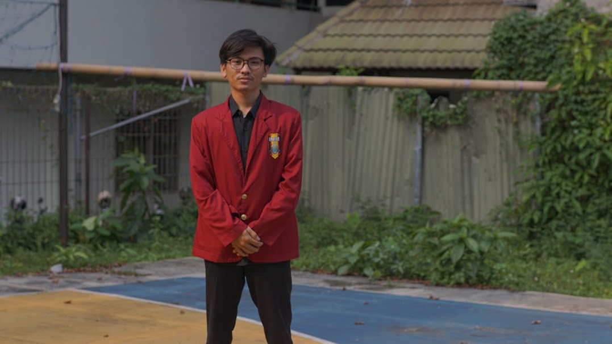
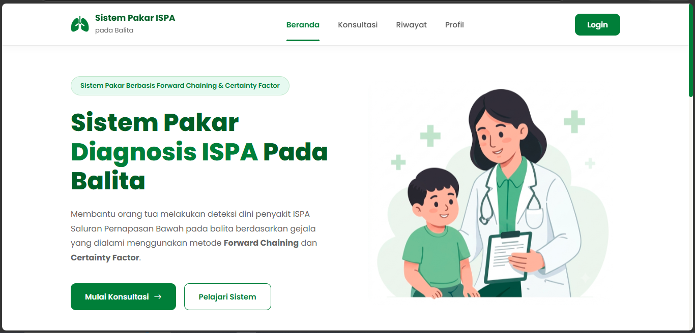
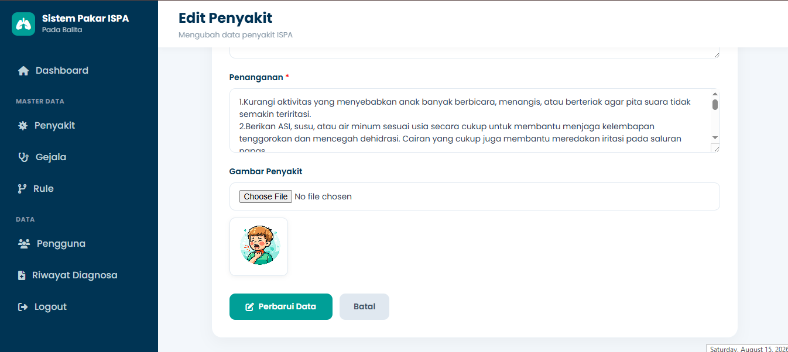
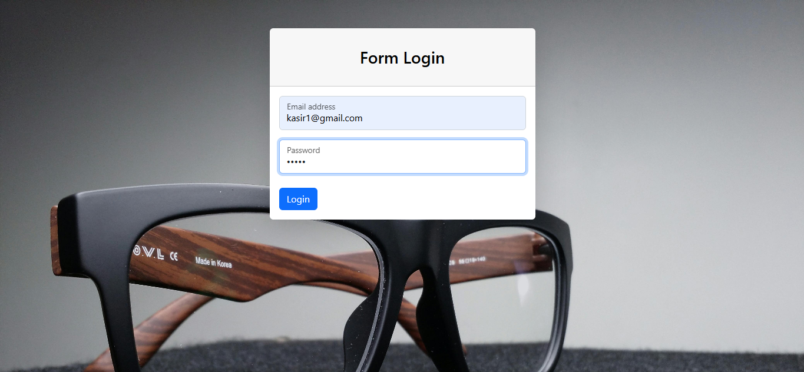
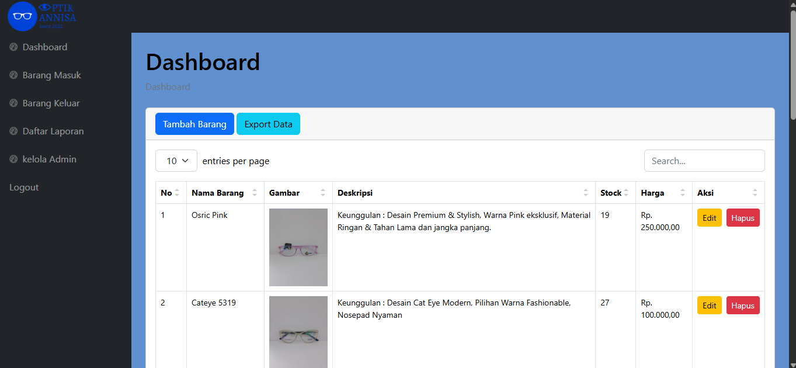

2022 – 2026
IPK 3.37 / 4.00
Institut Teknologi dan Bisnis Ahmad Dahlan Jakarta
S1 Sistem Informasi
Lulusan Baru S1 Sistem Informasi
Memiliki pengetahuan dan pengalaman di bidang teknologi informasi, pengembangan aplikasi berbasis web, analisis kebutuhan sistem, dan pengelolaan database. Siap berkontribusi untuk kebutuhan operasional perusahaan.

Lulusan Baru S1 Sistem Informasi dari Institut Teknologi dan Bisnis Ahmad Dahlan Jakarta dengan latar belakang pendidikan SMK Administrasi Perkantoran. Memiliki pengetahuan dan pengalaman dalam bidang teknologi informasi, khususnya pengembangan aplikasi berbasis web, pengelolaan database, analisis sistem, serta pemrograman dasar.
Selain itu, memiliki kemampuan dalam bidang administrasi, pengolahan data, penyusunan dokumen, dan penggunaan Microsoft Office (Word, Excel, dan PowerPoint). Memiliki pengalaman mengerjakan proyek akademik dan berorganisasi yang mengembangkan kemampuan komunikasi, kerja sama tim, koordinasi, serta pemecahan masalah.
S1 Sistem Informasi
Administrasi Perkantoran

Ikatan Mahasiswa Sistem Informasi – ITB Ahmad Dahlan Jakarta

Ikatan Mahasiswa Muhammadiyah – FTD ITB Ahmad Dahlan Jakarta
Master of Training (MoT)
Ikatan Mahasiswa Sistem Informasi • ±25 peserta
Ketua Pelaksana
IMSISFO x Inilah.com • ±45 audiens
Master of Training (MoT)
Ikatan Mahasiswa Sistem Informasi • ±15 peserta
Penguasaan perangkat lunak, bahasa pemrograman, dan pengelolaan basis data.
Kemampuan interpersonal dan penguasaan bahasa komunikasi.
Klik pada gambar pratinjau aplikasi untuk melihat tampilan layar penuh.


Implementasi sistem pakar menggunakan algoritma Forward Chaining dan Certainty Factor untuk diagnosis ISPA pada balita.


Analisis dan perancangan sistem penjualan berbasis website untuk modernisasi toko optik menggunakan metodologi Waterfall.
SMK Negeri 2 Kab. Tangerang x PT Hana Kreasi Utama
ENIGMA CAMP x IMSISFO
ENIGMA CAMP x ITB-AD
IMSISFO x Dicoding
Inilah.com x IMSISFO